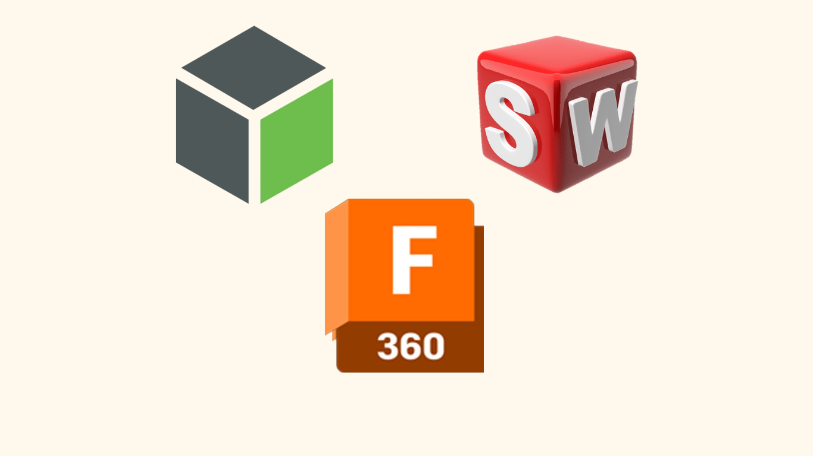
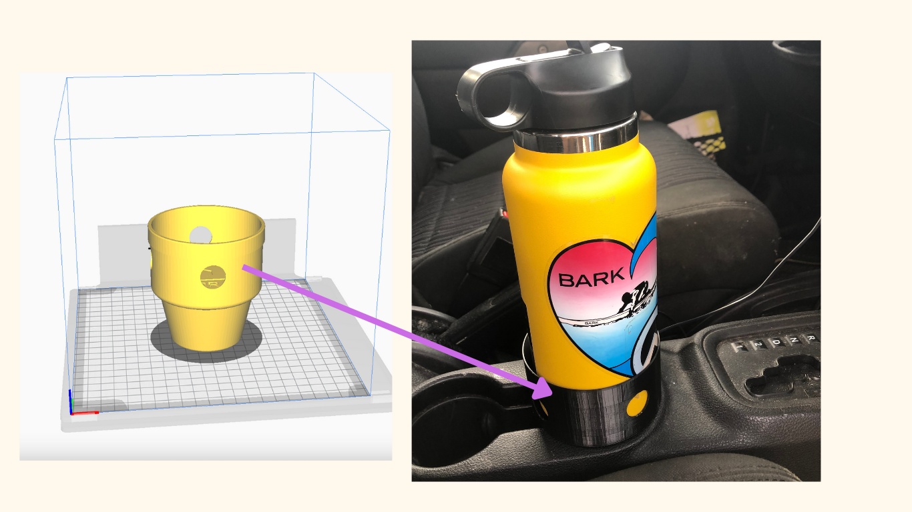
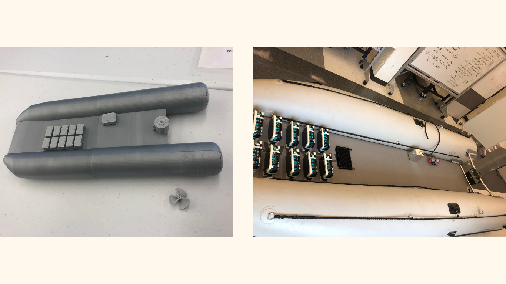
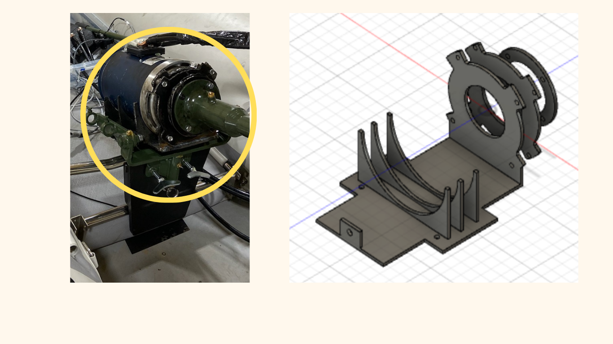
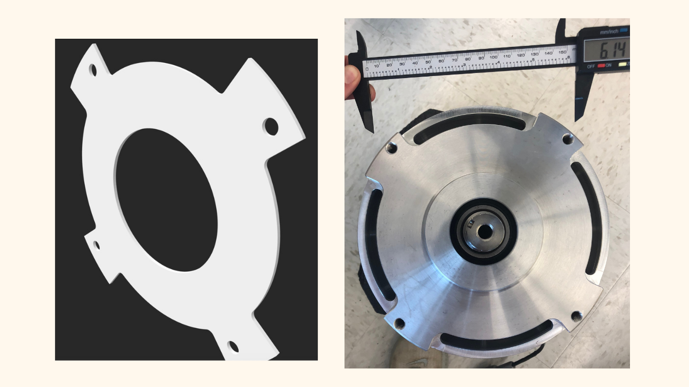

CAD Modeling
Details
Using Fusion 360, Creo Parametric, and Solid Works to create a wide variety of CAD models and engineering drawings. 3D printed in PLA and ABS which has given me hands-on experience with 3D printing techniques and best practices.
I created some videos as well to show the more complex CAD models I created using gears. This included a fishing reel and a motor.
Fishing Reel Video Motor Video

Examples
I have included some example images of my CAD models, 3D prints, and engineering drawings.
1 / 12

Created a cup holder to fit my hydroflask via Fusion 360.
2 / 12
Created Engineering drawing for cup holder.
3 / 12

Created mount to fit motor shaft to longtail shaft of the boat. Machined using aluminum block and lathe.
4 / 12
Created a model of the full boat for prototyping. This included the hull, propeller, batteries, and motor. Sized appropriatley and printed using PLA.
5 / 12

3D printed model compared to boat after it was built.
6 / 12

Created a 3D model for a motor mount. This helped us machine the parts we needed for the motor mount which we evetually cut out of metal and welded together.
7 / 12

Part of the motor mount which was laser cut.
8 / 12
Created a coupon holder design to better hold biological pieces using Creo Paramateric.
9 / 12
Close up of the functionality of the coupon holder. Created in Creo Parametric.
10 / 12
3D printed holder with specific measurements to fit other 3D printed object.
11 / 12
Image of fishing reel fully assembled. This was also 3D printed and fully functional with gears.
12 / 12
An example of another 3D drawing made for a CAD model using fusion 360.